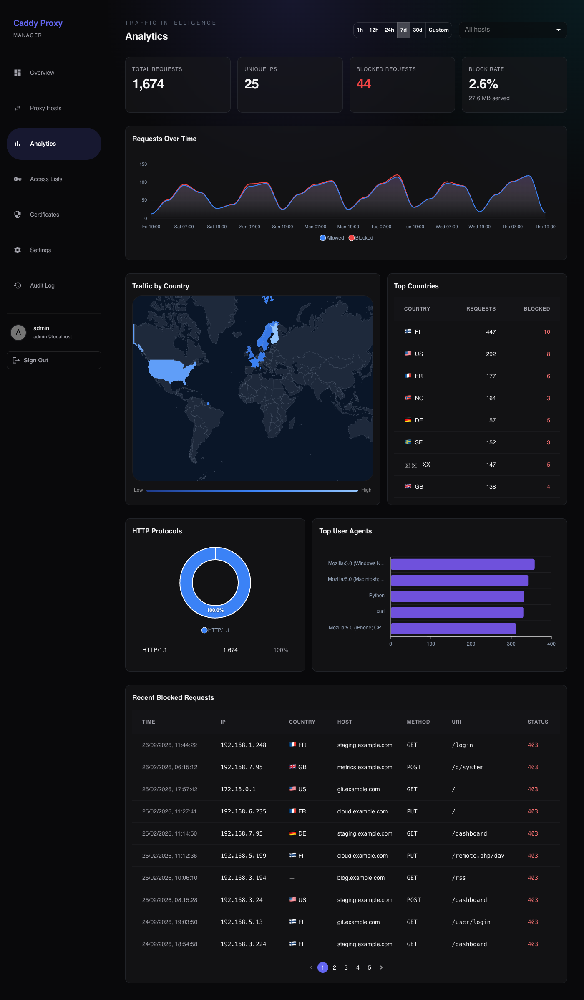
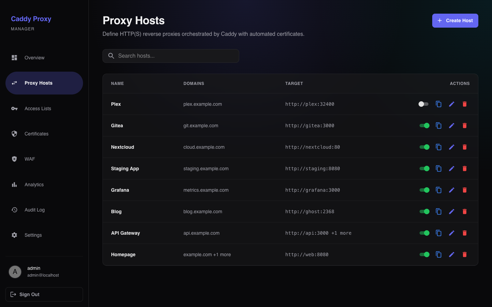
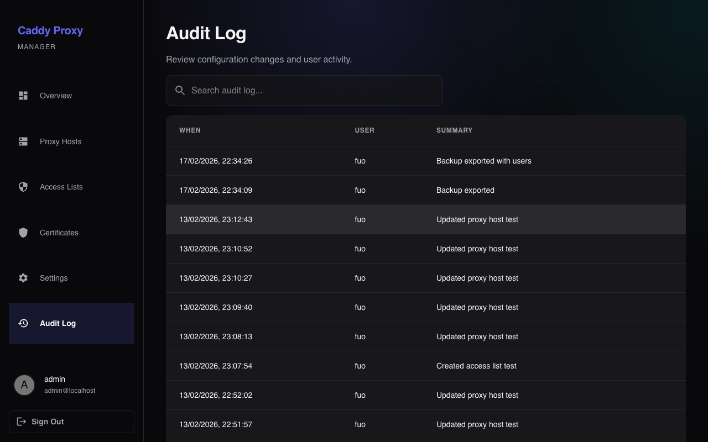

Control Every Edge.
The modern, secure context for your reverse proxy. Manage Caddy with an intuitive interface, automatic HTTPS, geo blocking, and detailed audit logging.

Powerful Simplicity
Everything you need to manage your infrastructure, nothing you don't.
Reverse Proxy
Configure upstream pools, load balancing, custom headers, and per-host enable/disable with a clean editor.
Auto HTTPS
Automatic TLS certificates for every proxy host via Caddy ACME. Supports Let's Encrypt, ZeroSSL, and Cloudflare DNS-01.
Traffic Analytics
Live request charts, country-level traffic map, top user agents, and blocked request log — across any time range.
Geo Blocking
Block or allow traffic by country, continent, ASN, CIDR range, or exact IP — per proxy host, with allow-override rules.
Access Control
Protect endpoints with HTTP basic auth lists or full OAuth2/OIDC SSO via any OIDC-compliant provider.
Audit Log
Every change is tracked and searchable. See who modified what and when, with full event history.
Certificate Visibility
See issuer, expiry status, and health for every ACME-managed certificate — no more guessing what Caddy obtained.
Docker Ready
Deploys in seconds with a single docker-compose file. Persistent data via volumes, stateless app logic.
Designed for Reliability




-
Caddy Powered
Uses Caddy's native Admin API for real-time configuration updates without restarts.
-
Type-Safe & Secure
End-to-end type safety with TypeScript. Secure session management and input validation.
-
SQLite Database
Self-contained data storage. Easy to backup, migrate, and maintain.
-
React Interface
A responsive, dark-mode first UI built with the latest React patterns for a snappy experience.
Deploy in Seconds
Get up and running with Docker Compose.
# Setup environment cp .env.example .env
# Start the stack docker compose up -d